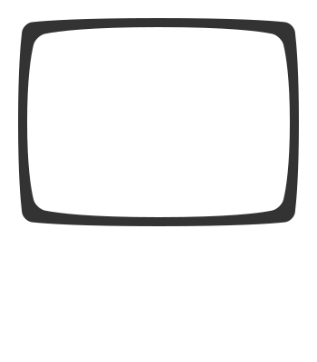

Getting more done after 2am than most people do all day.
Since 1976, Computer Science House has provided a revolutionary living and learning environment for its members. With unique facilities, emphasis on hands-on learning and a strong social atmosphere, CSH helps its members grow as professionals and more.
